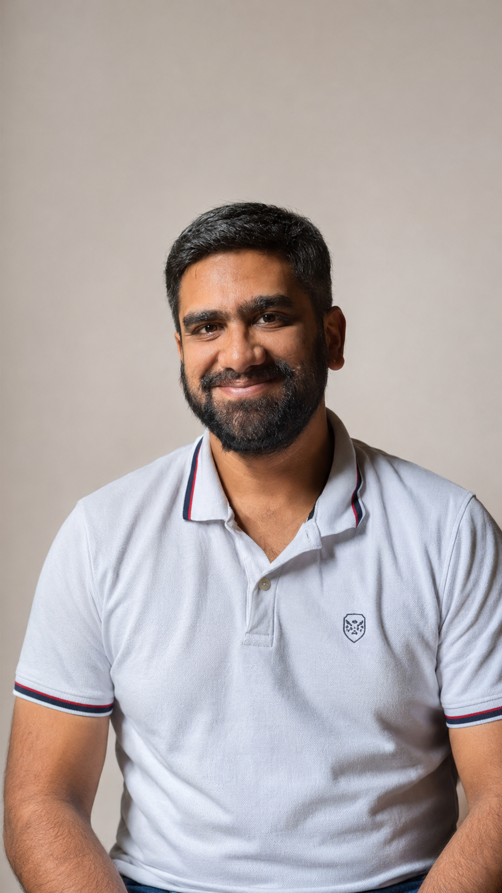

I build products that work in the real world.
Mechanical Engineer turned PM, with 8+ years across automotive, manufacturing, operations, and SaaS. Most recently at Smartstaff, I worked across roadmap, rollout, GTM, and enterprise adoption in a business where the hard part was never just shipping.
I am strongest where workflows are messy, teams are cross-functional, and adoption depends on getting the last mile right. Lately, I also build with AI — not as a buzzword, but as infrastructure for faster thinking, sharper product decisions, and faster shipping.

I am comfortable when there is no playbook yet. New product motion, unclear ownership, greenfield workflows — that is usually where the real leverage is.
I work well at the seams — product, ops, finance, design, engineering, and GTM. Not as a coordinator, but as someone willing to make tradeoffs visible and move the work forward.
I go looking for friction before users complain about it. Onboarding, activation, configuration, and handoff flows — the work that decides whether a product gets adopted or quietly bypassed.
I have spent much of my career in environments where software only matters if operations, customers, and internal teams can actually use it. That makes me biased toward rollout clarity, measurable adoption, and systems that hold up under scale.
Active products that show how I define problems, use AI in the workflow, and ship end-to-end from problem to working system.
A family health record system where AI helps structure the past, not just read one document. Upload prescriptions and lab reports, review AI-structured outputs, and build context across older prescriptions over time. The product challenge is not OCR accuracy — it is designing a trustworthy repository where extraction, review, storage, and analysis all work together in a sensitive healthcare workflow.
Group trips fail before booking starts — the real issue is commitment, alignment, and budget across a group. Andiamo owns the messy phase before logistics: getting everyone aligned on vibe, destination, budget, and dates. It uses deadlines, private budgets, and lightweight social pressure to move a group toward a decision rather than a stalled chat thread.
Early-stage founders do not behave like trained sales teams. Remi captures post-call context through lightweight Telegram inputs, uses AI to structure what mattered, and brings that context back when follow-up time comes. The core thesis: do not ask founders to become better at CRM admin — build a system that adapts to how they already work.
5 roles across 4 companies and 3 countries — driven by curiosity more than a plan. Each turn taught me something the previous straight couldn't.
A recurring pattern in my career: stepping into unfamiliar domains and getting useful quickly. The domain changes, but the work starts the same way — understand the incentives, find the friction, stay curious longer than most people do.
One of the things I am most proud of is building teams that could run with minimal intervention. Hiring well, assigning ownership clearly, and creating strong feedback loops has mattered to me as much as any individual project outcome.
Success for me is not just title or salary. It is reaching a point where work creates enough freedom for deeper things: family, nature, learning, and a calmer way of living.
Building something ambitious, fixing a messy product surface, or looking for a PM comfortable across product, ops, and execution? I would be glad to talk.